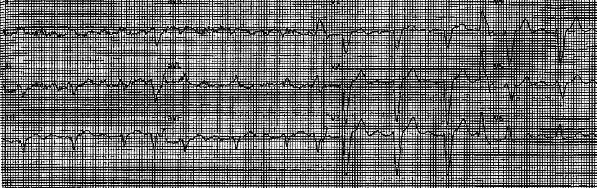
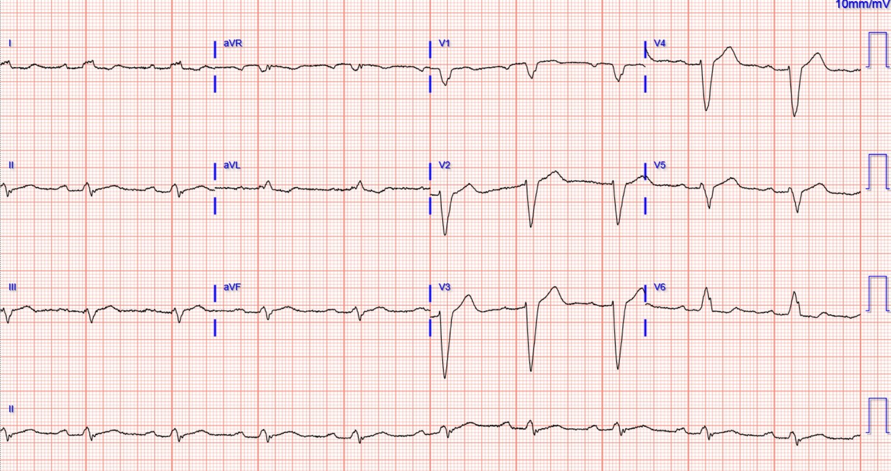
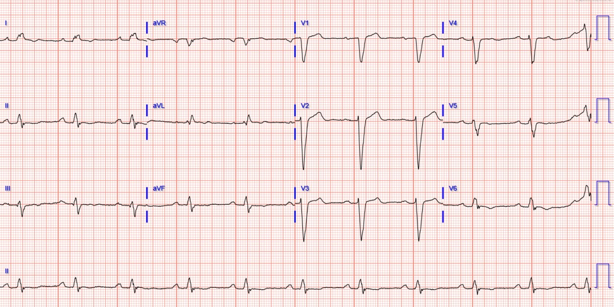
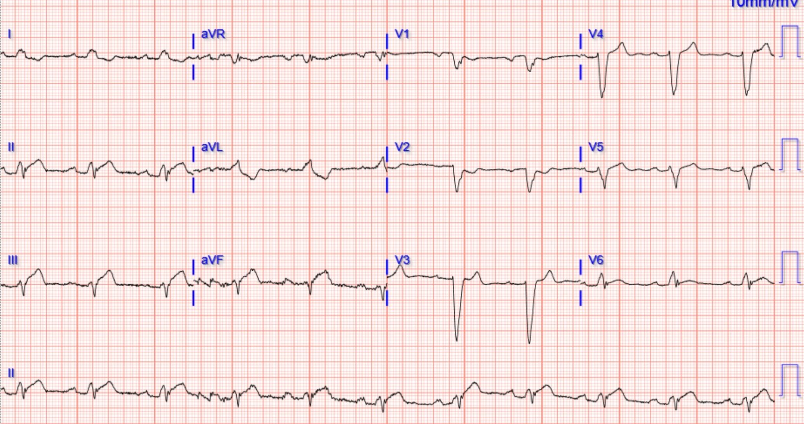
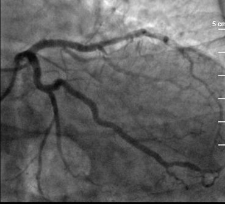
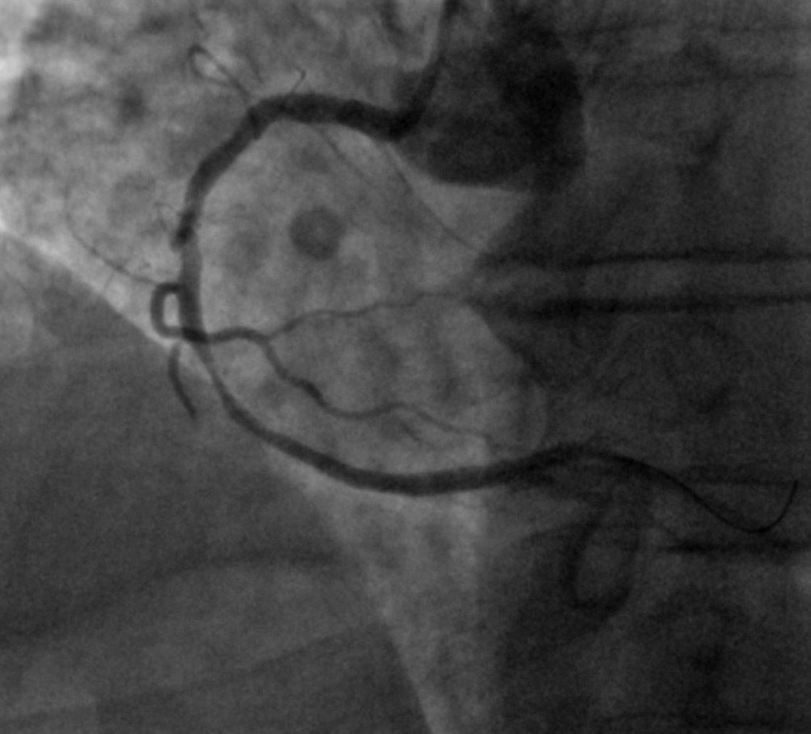
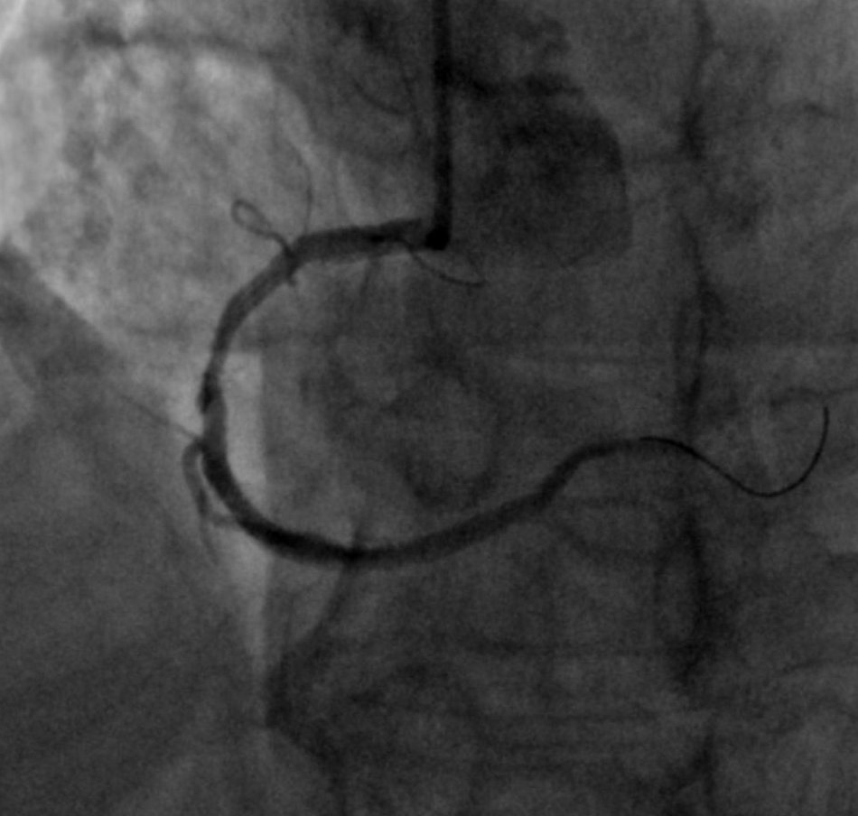
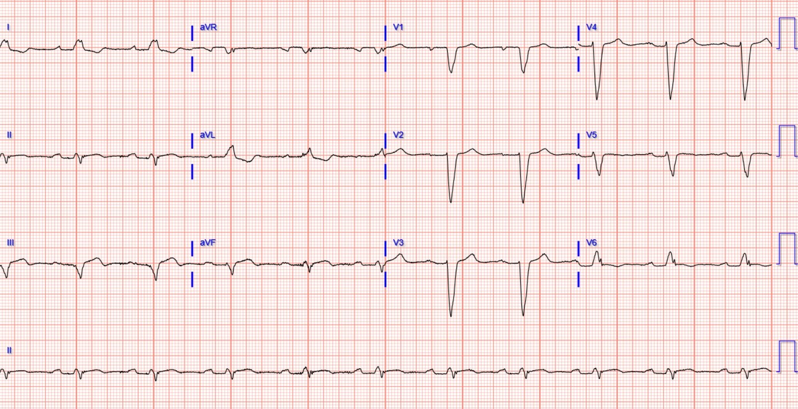
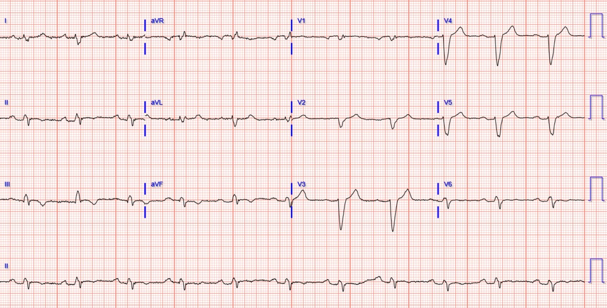
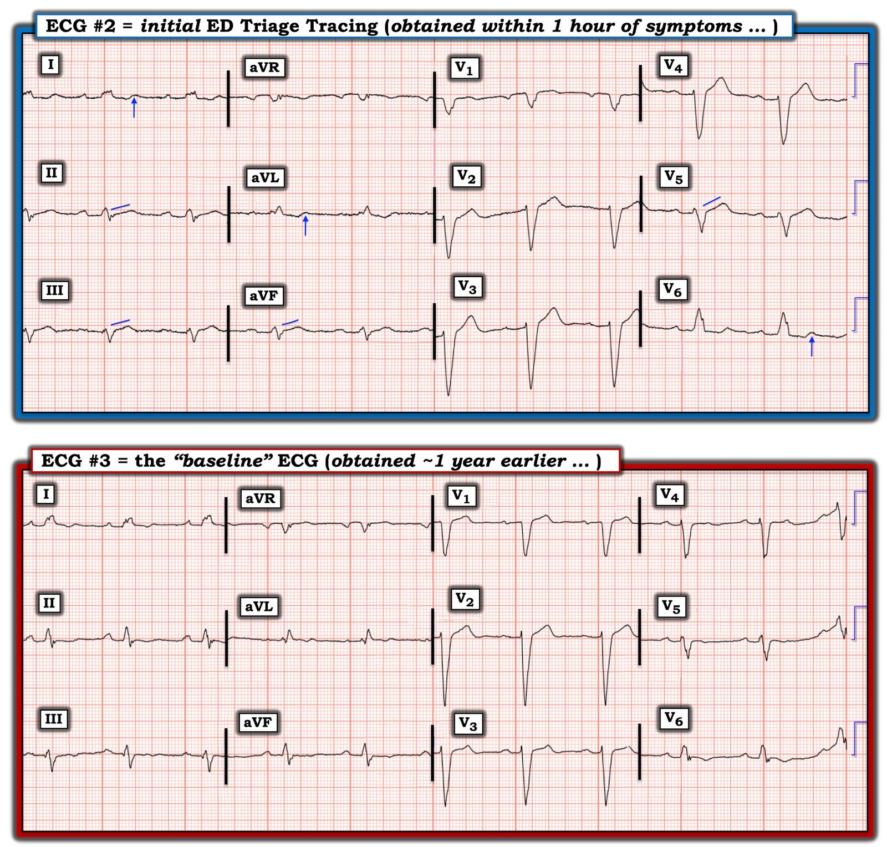

01/08/2022 — Một người đàn ông ở độ tuổi 60 bị chóng mặt, buồn nôn, đau ngực và LBBB
Bản dịch tiếng Việt của bài "A man in his 60s with dizziness, nausea, chest pain, and LBBB" – Dr. Smith’s ECG Blog. Giữ nguyên toàn bộ 12 hình ảnh của bản gốc.
Gửi bài và viết bởi Parker Hambright MD, bình duyệt bởi Meyers, McLaren, Grauer, Smith
Một người đàn ông cuối độ tuổi 60 gọi đội cấp cứu ngoài viện (EMS) vì chóng mặt, buồn nôn, nôn và đau ngực cấp tính ngay sau khi bắt đầu tập thể dục buổi sáng. Các triệu chứng chỉ kéo dài khoảng 15 phút rồi tự hết. Ông được đưa đến khoa cấp cứu (ED) và được thăm khám trong vòng chưa đầy một giờ kể từ khi khởi phát triệu chứng. Tiền sử của ông gồm bệnh động mạch vành (CAD) đã biết, tăng huyết áp (HTN), rối loạn lipid máu (HLD), nhồi máu cơ tim cũ đã đặt stent LAD, đã phẫu thuật sửa phình động mạch chủ bụng (AAA), và có kể bị choáng váng/chóng mặt (vertigo).
Dưới đây là các điện tâm đồ của EMS và lúc phân loại (triage) tại khoa cấp cứu (không rõ triệu chứng còn hay đã hết vào thời điểm ghi các điện tâm đồ này, nhưng có vẻ nhiều khả năng triệu chứng đã đỡ hoặc đã hết):
Điện tâm đồ của EMS:


Lúc phân loại tại khoa cấp cứu (trong vòng 1 giờ kể từ khi khởi phát triệu chứng):


Điện tâm đồ nền từ 1 năm trước:


Diễn giải của Meyers: Các điện tâm đồ của EMS và lúc phân loại ở trên có những thay đổi đáng ngờ, nhưng chưa có giá trị chẩn đoán, so với điện tâm đồ nền. Điện tâm đồ nền chỉ có độ lệch ST rất nhỏ ở các chuyển đạo chi, trong khi điện tâm đồ lúc phân loại cho thấy tỷ lệ STE ở III và aVF và tỷ lệ STD ở I và aVL lớn hơn, kèm diện tích dưới sóng T tăng lên, so với điện tâm đồ nền. Nhưng điện tâm đồ lúc phân loại không có bất kỳ tiêu chuẩn nào trong tiêu chuẩn Sgarbossa cải biên. Nó chưa có giá trị chẩn đoán, nhưng có thể đáng ngờ về các thay đổi động ở các chuyển đạo dưới báo hiệu OMI thành dưới. Chỉ dựa vào các điện tâm đồ này thì tôi chưa thể chắc chắn, nhưng chắc chắn tôi sẽ thu thập thêm thông tin, bao gồm ghi lại điện tâm đồ, để xem mối lo ngại này có đang thành hiện thực hay không.
Troponin I độ nhạy cao ban đầu của ông (Beckman Coulter Access hsTnI) dưới 6 ng/L (lấy máu vào khoảng 1 giờ sau khi khởi phát triệu chứng).
Các bác sĩ điều trị có vẻ nghĩ rằng triệu chứng của ông liên quan nhiều hơn đến tiền sử chóng mặt (vertigo). Ông được cho dùng meclizine và triệu chứng đã đỡ. Ông được cho về nhà.
………….
5 ngày sau, ông quay lại với than phiền đau ngực từng cơn trong hai hoặc ba ngày. Ông đến viện khi nhận ra cơn đau không hết đi trong đợt gần đây nhất này. Ông không có thêm đợt chóng mặt nào.
Đây là điện tâm đồ của ông lúc phân loại ở lần đến viện thứ hai:


Điện tâm đồ trên có giá trị chẩn đoán OMI dưới-sau trên nền LBBB. Các dấu hiệu gồm STE đồng hướng ở II, STE ngược hướng quá mức xét theo tỷ lệ ở III (tỷ số ST/S = 2/4 = 0,5) và aVF kèm chênh xuống soi gương ở I và aVL, hình thái sóng T tối cấp ở II, III và aVF, và STD đồng hướng kèm sóng T đảo ngược (TWI) ở V1 và V2. Phòng thông tim (cath lab) được kích hoạt và bệnh nhân được khoa tim mạch đưa cấp cứu vào phòng thông tim.
Chụp mạch vành cho thấy hẹp 70% RCA đoạn gần và tắc do huyết khối (100%) RCA đoạn giữa. Cả hai tổn thương đều được đặt stent và có dòng chảy TIMI 3 sau can thiệp. Stent LAD cũ thông tốt, và LCX chỉ có vài bất thường nhỏ ở thành mạch.






Troponin I là 3.710 ng/L, rồi 8.228 ng/L, sau đó không đo troponin thêm.
Điện tâm đồ sau thông tim 1:


STE giảm và sóng T đảo ngược ở phần cuối tại các chuyển đạo dưới
(Sóng Wellens kiểu A “thành dưới” trên nền LBBB)
Điện tâm đồ sau thông tim 2:


Sóng T đã tiến triển trở nên sâu hơn và đối xứng hơn.
(Sóng Wellens kiểu B “thành dưới” trên nền LBBB)
Các điện tâm đồ sau thông tim cho thấy tái tưới máu vùng dưới-sau.
Siêu âm tim cho thấy LVEF 50% kèm giảm động các đoạn dưới vách vùng đáy.
Bệnh nhân hết triệu chứng, được dùng liệu pháp kháng tiểu cầu kép (DAPT) và xuất viện vào ngày nằm viện thứ 2 sau một diễn biến nội viện không biến chứng.
Những điểm cần học:
Hãy dùng tiêu chuẩn Sgarbossa cải biên để hỗ trợ chẩn đoán OMI trong bối cảnh phức bộ QRS rộng như LBBB và nhịp tạo nhịp thất. Nhưng cũng như mọi dấu hiệu OMI khác trên điện tâm đồ, điện tâm đồ khởi đầu từ bình thường/nền và tiến triển thành các dấu hiệu chẩn đoán này theo thời gian thực. Điện tâm đồ ở lần khám đầu trong ca này nằm “ở giữa” điện tâm đồ nền và điện tâm đồ có giá trị chẩn đoán OMI dưới-sau; nói cách khác, vì chúng ta biết cơn đau đang giảm dần, nhiều khả năng nó đang “trên đường đi xuống” từ các dấu hiệu OMI rõ rệt hơn, trên đường trở về bình thường (và sau đó nhiều khả năng là tái tưới máu). Muốn đọc điện tâm đồ chính xác về OMI thì phải học được những diễn tiến này. Ngoài ra, chúng tôi đã bàn nhiều lần trên blog rằng tỷ lệ 25% cho STE ngược hướng quá mức đặc hiệu hơn nhưng kém nhạy hơn mức 20%. Không có tiêu chuẩn nào hoàn hảo khi đứng riêng lẻ, và nếu bạn hiểu diễn tiến của OMI, bạn sẽ làm tốt hơn so với chỉ dùng riêng tiêu chuẩn Sgarbossa cải biên.
Ngay cả troponin độ nhạy cao cũng không tăng một cách đáng tin cậy trong 1 hoặc thậm chí có thể 2 giờ đầu kể từ khi khởi phát ACS. Rất có thể xét nghiệm troponin thứ hai ở lần khám đầu của bệnh nhân này đã cho thấy một “delta” (thay đổi, hay tăng) đáng kể, hoặc thậm chí đã vượt trên giới hạn trên tham chiếu bách phân vị thứ 99. Trong cả hai trường hợp, đều cần phải thăm dò thêm.
Ôn tập các dấu hiệu OMI trên nền LBBB trên điện tâm đồ:
Cách tiếp cận chẩn đoán OMI khi có LBBB trước đây là dùng tiêu chuẩn Sgarbossa nguyên bản, công bố năm 1996. Bộ tiêu chuẩn này gồm 3 tiêu chuẩn sau:
ST chênh lên đồng hướng >1mm ở ít nhất một chuyển đạo có QRS dương (5 điểm)
ST chênh xuống đồng hướng >1mm ở ít nhất một trong các chuyển đạo V1-V3 (3 điểm)
ST chênh lên ngược hướng >5mm ở ít nhất một chuyển đạo có QRS âm (2 điểm)
Tổng điểm từ 3 trở lên được coi là có giá trị chẩn đoán bất kỳ nhồi máu cơ tim cấp nào (OMI hoặc NOMI), với độ nhạy 49% và độ đặc hiệu 99%. Một phân tích gộp sau đó công bố độ nhạy chỉ 20%. Vì vậy, dù tiêu chuẩn Sgarbossa nguyên bản có độ đặc hiệu cao, nó lại thiếu độ nhạy. Độ nhạy thấp này là do 1) các nghiên cứu dùng chẩn đoán nhồi máu cơ tim bằng dấu ấn sinh học (bất kỳ nhồi máu cơ tim nào), không dùng chụp mạch vành (chẩn đoán OMI) và 2) chúng không dùng nguyên tắc tính tương xứng (proportionality).
Năm 2012, BS. Smith công bố một tiêu chuẩn mới là “STE ngược hướng >1mm VÀ >25% biên độ sóng S” để thay thế tiêu chuẩn trước đây là “STE ngược hướng >5mm ở các chuyển đạo có QRS âm”. Kết cục được xét là “Tắc mạch”, chứ không chỉ là bất kỳ nhồi máu cơ tim cấp nào. Tiêu chuẩn Sgarbossa cải biên mới gồm 3 tiêu chuẩn sau:
ST chênh lên đồng hướng >1mm ở ít nhất một chuyển đạo có QRS dương
ST chênh xuống đồng hướng >1mm ở ít nhất một trong các chuyển đạo V1-V3
ST chênh lên ngược hướng >1mm VÀ >25% biên độ sóng S đi trước ở ít nhất một chuyển đạo
Sự thay đổi này của bộ tiêu chuẩn đã loại bỏ ngưỡng STE 5mm tùy tiện và thay bằng một tiêu chuẩn dựa trên mức ngược hướng không tương xứng, thay vì một mức STE cố định. Tiêu chuẩn Sgarbossa cải biên đã được Meyers và cs. thẩm định hồi cứu và xác định rằng, khi dùng quy tắc 25%, có độ nhạy 80% và độ đặc hiệu 99% đối với OMI; khi dùng quy tắc 20%, độ nhạy tăng lên 84%, còn độ đặc hiệu giảm xuống 94%. Sự thay đổi này đã cải thiện độ nhạy đối với OMI trên nền LBBB – đặc biệt ở các điện tâm đồ có điện thế thấp – mà không làm giảm độ đặc hiệu một cách có ý nghĩa thống kê.
Tiêu chuẩn Sgarbossa cải biên có thể được áp dụng một cách khách quan cho các điện tâm đồ có LBBB trong bối cảnh có triệu chứng ACS nhằm phân biệt OMI với NOMI. Tuy nhiên, hiểu được bản chất của bộ tiêu chuẩn có thể giúp xác định vùng cấp máu động mạch vành nào nhiều khả năng đang bị OMI nhất. Ở nền tảng của trình tự diễn tiến OMI, một mức độ ST chênh lên nào đó được dự kiến sẽ xuất hiện khi có huyết khối gây tắc liên quan đến thành trước, thành bên và thành dưới của cơ tim, và ST chênh xuống ở V1-V4 được dự kiến trong tắc mạch thành sau. Những thay đổi do thiếu máu cục bộ này cũng có thể được dự đoán khi đã có LBBB từ trước. Các thay đổi điện tâm đồ dự kiến của OMI trên nền LBBB hoặc nhịp tạo nhịp thất theo từng vùng cấp máu động mạch vành được liệt kê dưới đây:
–Thành trước (giả định phức bộ QRS chủ yếu âm): ST chênh lên ngược hướng >1mm VÀ >25% biên độ sóng S ở V1-V4
–Thành bên (giả định phức bộ QRS chủ yếu dương): ST chênh lên đồng hướng >1mm ở các chuyển đạo V5-V6, I hoặc aVL
–Thành dưới: ST chênh lên đồng hướng >1mm hoặc STE ngược hướng quá mức lớn hơn hoặc bằng 25% ở các chuyển đạo II, III hoặc aVF, tùy theo QRS
–Thành sau (giả định phức bộ QRS chủ yếu âm ở các chuyển đạo trước): ST chênh xuống đồng hướng >1mm ở V1-V3
Trong LBBB không biến chứng, quá trình khử cực bất thường của tâm thất dẫn đến tái cực bất thường, và mức ST ngược hướng khoảng 10% là điều được dự kiến và bình thường. Việc nhận ra các thay đổi đoạn ST đồng hướng hoặc các thay đổi đoạn ST ngược hướng không tương xứng (>25%) là bất thường và đáng lo ngại về thiếu máu cục bộ có tầm quan trọng hàng đầu trong chẩn đoán OMI trên nền LBBB.
Trong ca này, điện tâm đồ thỏa 2 trên 3 tiêu chuẩn Sgarbossa cải biên. Việc nhanh chóng nhận ra và áp dụng tiêu chuẩn Sgarbossa cải biên đã giúp tái thông mạch kịp thời và mang lại một kết cục lâm sàng khả quan.
Xem thêm các bài khác về LBBB:
LBBB: Using the (Smith) Modified Sgarbossa Criteria would have saved this man’s life (LBBB: Dùng tiêu chuẩn Sgarbossa cải biên theo Smith lẽ ra đã cứu được mạng người đàn ông này)
Is there Wellens’ syndrome in left bundle branch block? Or in inferior and lateral leads? (Có hội chứng Wellens trong blốc nhánh trái không? Hay ở các chuyển đạo dưới và bên?)
See what happens when one fails to diagnose STEMI in LBBB and Paced Rhythm (Hãy xem điều gì xảy ra khi bỏ sót chẩn đoán STEMI trên nền LBBB và nhịp tạo nhịp)
A 60-something year old man with chest pain and a wide QRS (Người đàn ông sáu mươi mấy tuổi đau ngực và QRS rộng)
Acute Chest pain with LBBB. What is going on? (Đau ngực cấp kèm LBBB. Chuyện gì đang xảy ra?)
Subtle ECG Signs of OMI in LBBB (Các dấu hiệu điện tâm đồ tinh tế của OMI trên nền LBBB)
Wide Complex Tachycardia with Huge ST Elevation. What is going on? (Nhịp nhanh QRS rộng kèm ST chênh lên rất lớn. Chuyện gì đang xảy ra?)
What does LBBB look like in severe hypothermia? Is there a long QT? Is the QT appropriate for the temperature? (LBBB trông như thế nào khi hạ thân nhiệt nặng? Có QT dài không? QT có phù hợp với nhiệt độ không?)
An Adolescent with dizziness and near syncope (Thiếu niên chóng mặt và gần ngất)
A 50-something with 5 hours of typical chest pain and Left Bundle Branch Block (Người năm mươi mấy tuổi đau ngực điển hình năm giờ và blốc nhánh trái)
Chest pain with New LBBB: It helps to actually measure the ST/S ratio (Đau ngực kèm LBBB mới: thực sự đo tỷ số ST/S sẽ giúp ích)
A Fascinating Demonstration of ST/S Ratio in LBBB and Resolving LAD Ischemia (Một minh họa hấp dẫn về tỷ số ST/S trong LBBB và thiếu máu cục bộ vùng LAD đang hồi phục)
New Left Bundle Branch Block (LBBB) and Dyspnea (Blốc nhánh trái mới và khó thở)
Some Cardiologists still are not familiar with Sgarbossa Criteria….. (Một số bác sĩ tim mạch vẫn chưa quen với tiêu chuẩn Sgarbossa…..)
Left Bundle with Convex ST Segment: Where is the J-point? (Blốc nhánh trái với đoạn ST lồi: điểm J ở đâu?)
Is there excessively discordant ST Elevation in this ECG with Left Bundle Branch Block? (Có ST chênh lên ngược hướng quá mức trên điện tâm đồ blốc nhánh trái này không?)
New LBBB after Cardiac Arrest (LBBB mới sau ngừng tim)
Peer Reviewed Lecture: ECG Diagnosis of STEMI-equivalent in Left Bundle Branch Block (20 minutes) (Bài giảng đã bình duyệt: chẩn đoán tương đương STEMI trên điện tâm đồ khi có blốc nhánh trái)
Left Bundle Branch Block (LBBB) with Chest Pain, concordant and excessively discordant ST depression V2-V6 (Blốc nhánh trái kèm đau ngực, ST chênh xuống đồng hướng và ngược hướng quá mức ở các chuyển đạo trước tim)
Cardiac arrest, LBBB with STEMI on the ECG, but no Acute Coronary Syndrome! (Ngừng tim, LBBB với hình ảnh STEMI trên điện tâm đồ, nhưng không có hội chứng vành cấp!)
Left Bundle Branch Block and Left Anterior Descending Artery occlusion: Serial ECGs then T-wave inversion after reperfusion (Blốc nhánh trái và tắc động mạch liên thất trước: các điện tâm đồ liên tiếp rồi sóng T đảo ngược sau tái tưới máu)
LBBB with acute STEMI due to ruptured obtuse marginal, diagnosed with bedside ultrasound (LBBB với STEMI cấp do nứt vỡ mảng xơ vữa ở nhánh bờ tù, chẩn đoán bằng siêu âm tại giường)
Atypical Left Bundle Branch with acute RCA occlusion (Blốc nhánh trái không điển hình kèm tắc RCA cấp)

===================================
BÌNH LUẬN CỦA TÔI, bởi KEN GRAUER, MD (1/8/2022):
===================================
Tôi luôn bị cuốn hút bởi thử thách đọc điện tâm đồ của một bệnh nhân có triệu chứng mới và LBBB. Đôi khi việc đánh giá này DỄ — như với bản ghi thứ 4 trong ca hôm nay, được ghi khi bệnh nhân quay lại khoa cấp cứu 5 ngày sau — lúc đó, điện tâm đồ đã trở nên rõ ràng có giá trị chẩn đoán OMI dưới-sau cấp.
- Ngược lại — các dấu hiệu điện tâm đồ tinh tế hơn nhiều ở bản ghi thứ 2 trong ca hôm nay (chính là điện tâm đồ lúc phân loại ban đầu tại khoa cấp cứu).
Như tôi vẫn thường nêu trên Dr. Smith’s ECG Blog — tôi ưu tiên Cách tiếp cận “Định tính” khi đánh giá các bản ghi LBBB ở bệnh nhân có triệu chứng mới, đặc biệt khi tiêu chuẩn Smith-Sgarbossa cải biên chưa được thỏa.
- Tôi tập trung Bình luận của tôi trong ca hôm nay vào bản ghi lúc phân loại tại ED ban đầu — và — vào điện tâm đồ nền từ 1 năm trước. Đây là bản ghi thứ 2 và thứ 3 được trình bày ở trên trong phần bàn luận của BS. Hambright và BS. Meyers — mà tôi đã sao lại và ghép cạnh nhau trong Hình 1.
- Do độ phân giải chưa tốt — việc so sánh bản ghi EMS trước viện với điện tâm đồ nền trong ca hôm nay khó hơn nhiều. Vì cách đọc của tôi đối với bản ghi EMS trước viện hầu như giống hệt với điện tâm đồ lúc phân loại ban đầu (ngoại trừ việc có vài PVC trên bản ghi EMS) — tôi nghĩ vì mục đích giảng dạy, hoàn toàn hợp lý khi coi “điện tâm đồ lúc nhập viện” chính là bản ghi lúc phân loại tại ED ban đầu ( = điện tâm đồ #2).


Tôi muốn nói gì khi dùng Cách tiếp cận “Định tính”?
Dù riêng bản ghi lúc phân loại tại ED ban đầu ( = điện tâm đồ #2) không có giá trị chẩn đoán OMI cấp — đánh giá “định tính” hình thái sóng ST-T thực sự đáng ngờ về một biến cố cấp đang tiến triển.
- Dù tiêu chuẩn cải biên Smith-Sgarbossa có hữu ích đến đâu — tôi vẫn thích tìm những thay đổi sóng ST-T mà tôi biết là không bình thường ở bệnh nhân LBBB. Những thay đổi này ở điện tâm đồ #2 rất tinh tế — nhưng chúng thực sự có mặt:
- Vì cách tiếp cận định tính không dùng các phép đo — tôi hoàn toàn thừa nhận rằng cách tiếp cận này dựa trên kinh nghiệm. Dù vậy — cách tiếp cận này đã luôn hiệu quả đối với tôi trong nhiều năm qua.
- Vì thay đổi sóng ST-T theo cách tiếp cận định tính có thể rất tinh tế — càng nhiều chuyển đạo có hình thái sóng ST-T bất thường — thì khả năng có một biến cố tim cấp đang diễn ra càng lớn.
- Điểm MẤU CHỐT: Cách tốt nhất để cải thiện khả năng nhận ra các bất thường sóng ST-T tinh tế trong bối cảnh LBBB — là thường xuyên xem lại và so sánh điện tâm đồ ban đầu của mỗi ca bạn gặp với các bản ghi theo dõi được ghi sau khi tái tưới máu cấp.
- Để tìm hiểu thêm về Cách tiếp cận “Định tính” — Xin xem các Bình luận của tôi trong bài ngày 17 tháng Chín năm 2020 — bài ngày 7 tháng Tư năm 2019 — và bài ngày 24 tháng Năm năm 2019 trên Dr. Smith’s ECG Blog.
Chúng ta thấy gì ở điện tâm đồ #2 ( = bản ghi lúc phân loại tại ED ban đầu)?
Nhịp ở điện tâm đồ #2 là nhịp xoang ~60 lần/phút. Có điện thế thấp ở các chuyển đạo chi. Khoảng PR kéo dài (~0,24 giây) — và phức bộ QRS rộng, phù hợp với LBBB hoàn toàn.
- Dù khó đánh giá do điện thế thấp — có hiện tượng thẳng đuỗn của đoạn khởi đầu ST ở mỗi chuyển đạo dưới (các đường XANH LAM chéo ở những chuyển đạo này).
- Hiện tượng thẳng đuỗn tương tự của đoạn khởi đầu ST cũng thấy ở chuyển đạo V5. Hãy chú ý sự khác biệt tinh tế về hình dạng của các đoạn ST “thẳng đuỗn” này — so với hình dạng dốc lên nhẹ nhàng (bình thường) của đoạn ST ở chuyển đạo V3 và V4 của điện tâm đồ #2.
- Bình thường với LBBB — các chuyển đạo bên (tức là chuyển đạo I,aVL,V6) biểu hiện sóng ST-T chênh xuống. Không “thường gặp” khi thấy mức độ dương ở phần cuối sóng T như được đánh dấu bằng các mũi tên XANH LAM ở những chuyển đạo này. Một lần nữa — có điện thế thấp ở các chuyển đạo bên này, khiến việc đánh giá tính tương xứng đặc biệt khó khăn. Nhưng tôi thấy kích thước tương đối của sóng T dương ở phần cuối tại chuyển đạo I,aVL,V6 của điện tâm đồ #2 rõ ràng lớn hơn mức tôi thường dự kiến.
XIN NHẤN MẠNH:
Các dấu hiệu sóng ST-T “định tính” nêu trên thực sự tinh tế! Những thay đổi này không có giá trị chẩn đoán OMI! Từ điện tâm đồ ban đầu duy nhất này, tôi HOÀN TOÀN không chắc chắn rằng một biến cố cấp đang diễn ra. Tôi sẽ không kích hoạt phòng thông tim vì những dấu hiệu này. Dù vậy:
- Bệnh nhân đến viện vì đau ngực mới xuất hiện này là người nguy cơ cao có biến cố cấp, do tiền sử bệnh mạch vành đã biết — và — triệu chứng mới khởi phát đột ngột, đủ nặng để phải gọi EMS đưa đến khoa cấp cứu. Do đó — chúng ta cần hạ thấp “ngưỡng” nhận diện các dấu hiệu điện tâm đồ đáng lo ngại.
- Dù tinh tế (và không có giá trị chẩn đoán) — tôi thấy các dấu hiệu sóng ST-T đáng ngờ có mặt ở không dưới 7/12 chuyển đạo trên điện tâm đồ #2 (các đường XANH LAM chéo và mũi tên XANH LAM ở bản ghi Phía trên trong Hình 1).
- ĐIỀU CỐT LÕI: Đã có sai sót trong xử trí ca này. Cơn đau ngực của bệnh nhân ngắn — và có vẻ đang giảm dần (nếu chưa hết hẳn) vào lúc ghi điện tâm đồ #2. Cách tốt nhất để biết LIỆU các dấu hiệu sóng ST-T có thể đáng lo ngại mà tôi nêu ở trên có thật hay không là theo dõi tiếp (tức là nhiều hơn một điện tâm đồ tại khoa cấp cứu — nhiều hơn một lần xét nghiệm troponin tại khoa cấp cứu — và nhớ đối chiếu mức độ đau ngực với thời điểm ghi các điện tâm đồ và xét nghiệm troponin liên tiếp). Điều này đã không được thực hiện.
- LƯU Ý: Nếu bệnh nhân hôm nay thực sự đã bị tắc hoàn toàn động mạch vành vào lúc gọi EMS — và NẾU lý do cơn đau ngực của ông giảm (như bệnh sử gợi ý) vào lúc ghi điện tâm đồ #2 là do có tái tưới máu tự phát của động mạch “thủ phạm” — thì theo BS. Hambright và BS. Meyers, lý do không thấy ST chênh lên rõ rệt ở điện tâm đồ #2 — có thể là do “giả bình thường hóa” (tức là đoạn ST trở về đường nền trên đường tiến triển thành sóng T tái tưới máu đảo ngược).
CŨNG XIN NHẤN MẠNH:
Cách đọc nêu trên của tôi được đưa ra trước khi tôi xem điện tâm đồ “nền” trước đó từ 1 năm trước của bệnh nhân này!
- Việc xem bản ghi “nền” ( = điện tâm đồ #3) của bệnh nhân này — xác nhận rằng các dấu hiệu ST-T mà tôi đánh dấu bằng màu XANH LAM ở điện tâm đồ #2 đều là mới so với điện tâm đồ 1 năm trước của bệnh nhân.
- Sóng T dương ở phần cuối đã có ở chuyển đạo I và aVL của điện tâm đồ #3. Dù vậy — Xét đến biên độ thấp của phức bộ QRS ở các chuyển đạo này — Chẳng phải phần cuối sóng T dương này rõ rệt hơn ở chuyển đạo I và aVL của điện tâm đồ #2 hay sao?
- Xuất phát từ đoạn ST dẹt ở các chuyển đạo dưới và ở chuyển đạo V4 của điện tâm đồ #3 — Liệu có chút nghi ngờ nào về sự thay đổi hình dạng sóng ST-T, với đoạn ST thẳng đuỗn ở mỗi chuyển đạo dưới này trên điện tâm đồ #2 không? Với bệnh sử đau ngực mới xuất hiện — giờ đây tôi diễn giải những sóng ST-T đã thay đổi này là tối cấp cho đến khi chứng minh được điều ngược lại.
Tóm lại:
Theo BS. Hambright và BS. Meyers — bệnh nhân hôm nay quay lại khoa cấp cứu 5 ngày sau vì đau ngực tái phát. Để nhấn mạnh Những điểm cần học đã nêu ở trên:
- Rất có thể NẾU lấy nhiều hơn một xét nghiệm troponin ở lần khám đầu tại khoa cấp cứu — thì xét nghiệm troponin thứ 2 có lẽ đã đủ bất thường để thúc đẩy thăm dò thêm (thay vì cho bệnh nhân về nhà).
- Tôi cũng nghi rằng NẾU ghi thêm một điện tâm đồ nữa tại khoa cấp cứu — thì giai đoạn “giả bình thường hóa” mà có lẽ chúng ta đang thấy ở điện tâm đồ #2 — có thể đã nhường chỗ cho sự xuất hiện của các sóng T tái tưới máu “tố cáo”.
- Điểm cần học Bổ sung: Đánh giá định tính các thay đổi sóng ST-T ở bệnh nhân LBBB có triệu chứng mới có thể gợi ý cho bạn một biến cố cấp đang tiến triển trước khi thỏa rõ ràng tiêu chuẩn Smith-Sgarbossa. Để “mài giũa” khả năng phát hiện những dấu hiệu tinh tế này — Hãy so sánh các chuyển đạo dưới ở điện tâm đồ #2 với các chuyển đạo dưới ở bản ghi thứ 4 trình bày ở trên trong phần trình bày của BS. Hambright và BS. Meyers (tức là điện tâm đồ lúc phân loại ở lần đến viện thứ 2). Làm như vậy sẽ cho thấy vì sao tôi lập tức nghi ngờ có thể có một OMI thành dưới cấp đang diễn ra, từ hiện tượng thẳng đuỗn sóng ST-T ở các chuyển đạo dưới trên bản ghi LBBB ở điện tâm đồ #2.